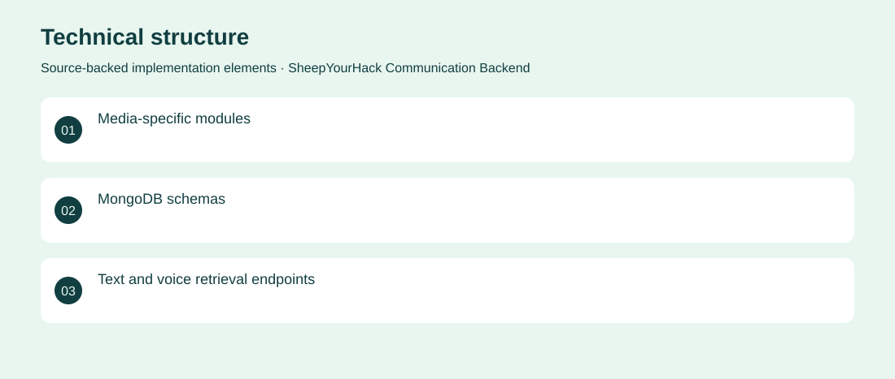

The project
A hackathon backend organising text, voice, recordings and translation resources. NestJS modules and MongoDB models provide a structure for exploring accessible communication workflows. Created modular text, voice, recording and translation resources with initial retrieval endpoints. Archived partial hackathon prototype. No adoption, revenue or deployment claims are inferred from the repository.
The problem
A communication prototype needs consistent storage and API boundaries for different media types.
The solution
Created modular text, voice, recording and translation resources with initial retrieval endpoints.
My contribution
Backend contribution to the hackathon prototype, covering service modules and persistence structure.
Technical structure

The portfolio cover is an editorial illustration. No live product screenshot is presented for this project.
Showcase assets
{kind=link}
{kind=link}
{kind=link}
New portfolio identity. Newly designed marks are portfolio treatments, not claims of official client branding.